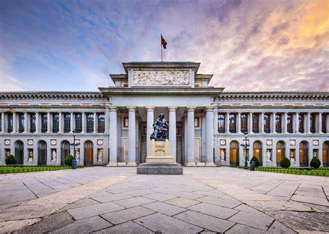
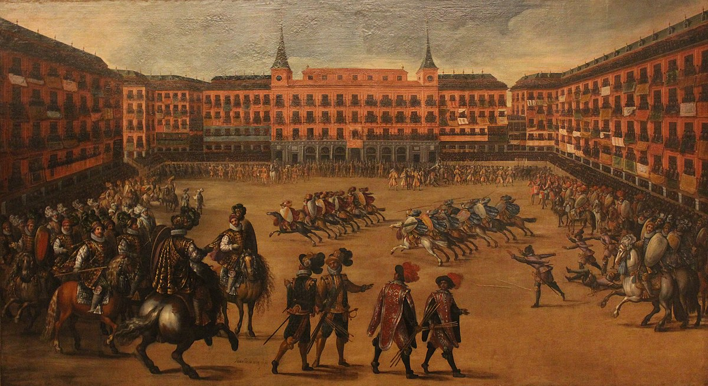

FACTS ABOUT MADRID
1. Madrid is a beautiful Spanish city located in the heart of the country. Known for its sunshine, friendly people, and relaxing daily life, it’s a desirable place to pass the time. But even if you know some things about Madrid, this list is sure to teach you something new.Madrid is one of the richest cities in europe and the sunniest city in europe.
2. Madrid is one of the most popular study abroad destinations
Students from all over the world come to study in Madrid. One could argue that this is because Spanish is a common choice for second language studies, but there’s actually more to it than that.
3.Madrid hosts an annual pride festival
Madrid Pride is the name of the event, the purpose to celebrate the LGBT pride of Madrileños as well as foreigners who come to join the festival. Every year, the gay district of Madrid, Chueca, is covered in flags and filled with lively people and activities.Chueca is one of the Best Neighborhoods in Madrid, thanks to the many shops and restaurants there, as well as the colorful culture that’s brought out by gay pride. On top of these highlights, Chueca is simply a pretty neighborhood.
4. Madrid is the home to Real Madrid
Football fans and players will feel like a kid in a candy store in Madrid. Their home team, Real Madrid, is one of the best teams in the world. Rivals to FC Barcelona in the first division, the Madrileño athletes have been playing the sport continuously since the team’s creation in 1928.
5. Madrid became the capital of Spain in the 16th century
6. The name ‘Madrid’ might be over 2,200 years old
The most ancient mention of the name ‘Madrid’ is found in Arabic records: Mayrit or Magerit is taken to mean ‘place of abundant water.’ This does not necessarily mean, however, that the name was an Arabic invention. Its true origins remain the source of heated debates between linguists. While the suggestion that the name developed from a folkloric myth has now been generally discarded, there are more plausible theories that Madrid’s name actually has Roman ancestry
7. Madrid lies at around 700 meters of altitude
There might be palm trees in Madrid, but fact is that the voluptuous city of Madrid lies at an astounding 667 meters above sea-level, many places in the north even surpassing the 700 meters mark! Consequently, the only humid breezes you might sense would have to be the gusts of air escaping the Metro shaft
8. Madrid celebrates a Carnavale full of fun and frolic, weeks before Lent. Highlights of the Carnavale is the Shrove Tuesday and Ash Wednesday when men in mourning bury a cardboard effigy of a sardine in a mock coffin by the riverside in remembrance of a tragic event that took place in the 18th century.
9. Spain's answer to Disneyworld is the Warner Brothers Movie World at Madrid which is open for six months in summer and has five themed parts namely Old West Territory, Hollywood, DC Super Heroes, Cartoon Village, and Warner Bros. Studios.
10. The famed Museo Nacional Centro de Arte Reina Sofía, Spain's modern art museum which is home to Picasso's masterpiece 'Guernica' and pays tribute to great artists of 20th-century Spain had once been named as "the ugliest building in Spain" by Catalan architect Oriol Bohigas.
HISTORY OF MADRID
Magerit, ‘land rich in water’. This is how the Arabs called this area on the central plain of the Iberian Peninsula, close to Sierra de Guadarrama, where King Phillip II of Spain later established the royal court. Later on, it grew into the big city that’s come down to us.
The first historical record of Madrid dates back to the year 865, when Emir Muhammad I commissioned the construction of a fortress in the village of Mayrit, on the banks of the river Manzanares. ‘Mayrit’ means ‘plenty of waterways’, which is why the city’s first recorded coat of arms read, ‘I was built on water / My walls are made of fire / This is my flag and my coat of arms’. Madrid belonged to the Islamic world until 1083, when Alfonso VI of Castile took over the city.Few vestiges have remained from this era. On Calle Mayor, next to the Institute of Italian Culture, there used to stand the Grand Mosque and, most probably, as in every Muslim city, the souk. On the site of the former mosque rose the Church of Santa María, of which some remains can still be seen. Close by, on Cuesta de la Vega, there’re parts of the old town walls that enclosed the medina or citadel. It was inside these walls that the Christians found a statuette of Virgin Mary with a candle that had been burning for over four hundred years at the time they seized the area. Almudena, derived from the Arabic al-mudayna that translates as ‘the little city’ or ‘citadel’, has been, since then, the name mostly used by Madrileños to refer to the Virgin.In the Medieval district of Madrid you can go to the National Archaeological Museum, with a really interesting collection of decorative objects from the Visigoth Kingdom of Toledo to the Late Middle Ages. The rooms dedicated to Medieval and Renaissance art in the Lázaro Galdiano Museum and the Prado Museum are well worth a visit too. It is also worth noting Madrid’s Christian City Walls, on which construction began after the fall of Toledo during the reign of Alfonso VI and continued, coinciding with the instability of borders and domains, during the 12th Century and first third of the 13th Century up to the year 1212.By the time the reign of Isabella II started, the city was still enclosed behind its walls, featuring a relatively slow demographic growth as well as very high population density. After the 1833 administrative reforms for the country devised by Javier de Burgos (including the configuration of the current province of Madrid), Madrid was to become the capital of the new Liberal state.
Madrid experienced substantial changes during the 1830s.[46] The corregimiento and the corregidor (institutions from the Ancien Regime) were ended for good, giving rise to the constitutional alcalde in the context of the liberal transformations.[46] Purged off from Carlist elements, the civil office and the military and palatial milieus recognised legitimacy to the dynastic rights of Isabella II.The reforms enacted by Finance Minister Juan Álvarez Mendizábal in 1835–1836 led to the confiscation of ecclesiastical properties and the subsequent demolition of churches, convents and adjacent orchards in the city (similarly to other Spanish cities); the widening of streets and squares ensued.
n 1854, amid economic and political crisis, following the pronunciamiento of group of high officers commanded by Leopoldo O'Donnell garrisoned in the nearby town of Vicálvaro in June 1854 (the so-called "Vicalvarada"), the 7 July Manifesto of Manzanares, calling for popular rebellion, and the ousting of Luis José Sartorius from the premiership on 17 July, popular mutiny broke out in Madrid, asking for a real change of system,[51] in what it was to be known as the Revolution of 1854. With the uprising in Madrid reaching its pinnacle on 17, 18 and 19 July,the rebels, who erected barricades in the streets, were bluntly crushed by the new government
The Glorious Revolution resulting in the deposition of Queen Isabella II started with a pronunciamiento in the bay of Cádiz in September 1868.[59] The success of the uprising in Madrid on 29 September prompted the French exile of the Queen, who was on holiday in San Sebastián and was unable to reach the capital by train.[60] General Juan Prim, the leader of the liberal progressives, was received by the Madrilenian people at his arrival to the city in early October in a festive mood. He pronounced his famous speech of the "three nevers" directed against the Bourbons,[61] and delivered a highly symbolical hug to General Serrano, leader of the revolutionary forces triumphant in the 28 September battle of Alcolea, in the Puerta del Sol.On 27 December 1870 the car in which General Prim, the prime minister, was travelling, was shot by unknown hit-men in the Turk Street, nearby the Congress of Deputies. Prim, wounded in the attack, died three days later, with the elected monarch Amadeus, Duke of Aosta, yet to swear the constitution.